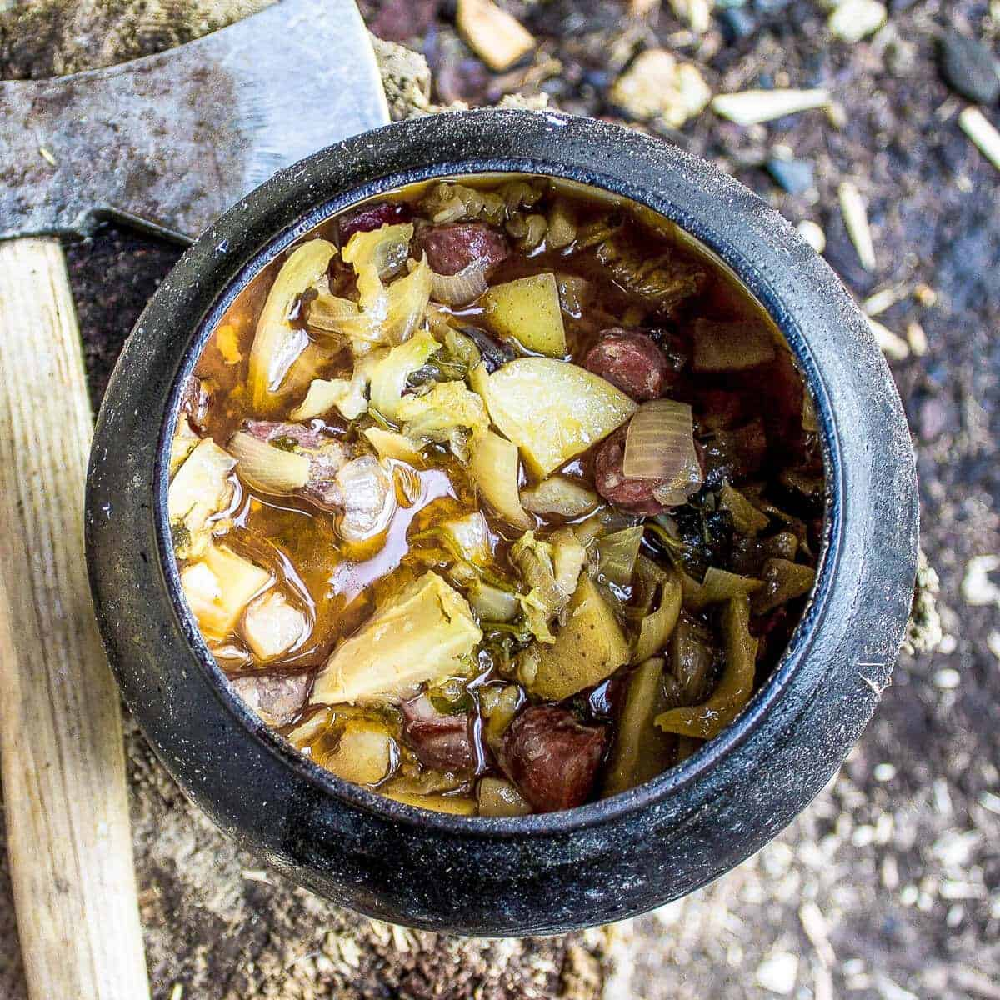

back to Home
Viking Stew

Description
Vikings used whatever they had at their disposal.
This is Viking stew crockpot recipe fit for the fire on a cold winters night.
Ingredients
- 2 large onions - roughly diced
- 4 cloves garlic - crushed
- 2 large potatoes - chopped into chunks
- 450 g (1 lb) Meat of choice - Beef shin, Venison, Smoked sausage
- 225 g (0.5 lb) bacon - optional but necessary and chopped roughly
- ½ cabbage - or other vegetables like carrot or celeriac roughly chopped or grated
- 500 ml (2.11 cups) beer - Dark beer works best
- 500 ml (2.11 cups) water/meat or vegetable stock
Instructions
- Place all the ingredients together into the pot and mix it well.
- Cook it at low medium temperature for about 5 hours monitoring it every now and again adding water or stock if needed.
- Season with salt and pepper when done.
- You can also chop up some herbs(parsley, marjoram, dill)and add it in when done.